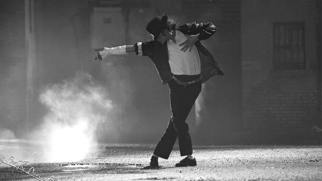

Michael Jackson
El rey del Pop

Michael Joseph Jackson fue un cantante, compositor y bailarín estadounidense. Reconocido como el "artista musical más exitoso de todos los tiempos" por los Guinness World Records.
Linea de tiempo de la vida de Michael Jackson
- 1958: Nació en Gary (Indiana), EE.UU.
- 1968: Forma parte del grupo "The jackson 5".
- 1971: Empezó como solista. Publica el álbum "Got be there. (Aunque siguió perteneciendo a la banda, comenzó su carrera en solitario).
- 1972: Publica el álbum "Ben".
- 1973: Publica el álbum "Music and me".
- 1975: Publica el álbum "Forever, Michael".
- 1979: Publica el álbum "Off the wall".
- 1982: Publica el álbum "Thriller".(El disco más vendido de la historia y el sexto disco de Jackson).
- 1983: Publica la canción "Beat it". (Esta canción ganó 2 premios Grammy y pertenece al disco "Thriller").
- 1987: Publica el álbum "Bad".(Fue el séptimo disco del artista y tuvo más de 30 millones de copias vendidas).
- 1991: Publica el álbum "Dangerous"
- 1995: Publica el álbum "HIStory: Past, Present and Future, Book I"
- 1997: Publica el álbum "Blood on the dance floor: HIStory in the mix"
- 2001: Publica el álbum "Invencible"
- 2009: Fallece días antes del comienzo de una gira. Por causa de un paro cardiorrespiratorio
- 2010: Se publica el primer álbum póstumo "Michael"
- 2014: Se publica el segundo álbum póstumo "Xscape"
“Mi música pretende unir todas las razas para que todos vivamos como una familia”.|Michael Jackson.